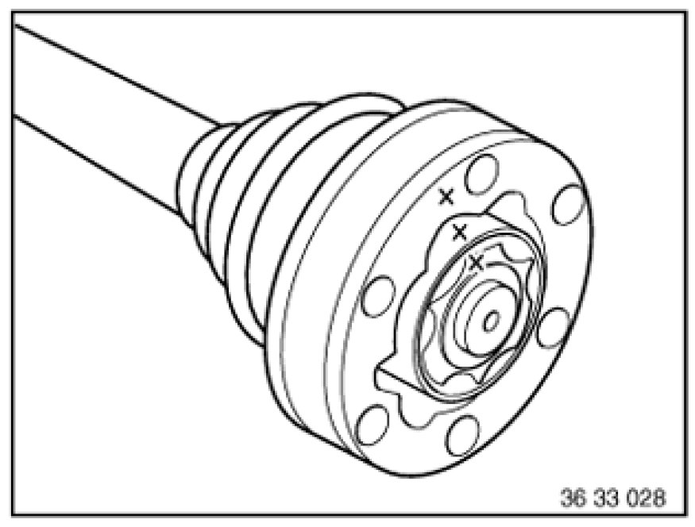

Replacing Gaiter on Left Output Shaft (Altered Sealing Cover)
33 21 035 - Replacing gaiter on left output shaft (altered sealing cover)

Special tools required:
- 21 2 120 21 2 120 Clutch Centering Tool
- 26 1 110 26 1 110 Removal Disk
- 33 2 100 33 2 100 Clamping Fixture

Necessary preliminary tasks:
- Remove output shaft
Removing inner gaiter:
Clean output shaft and clamp with a cloth in vice.
Unfasten hose clip (1).
Using a suitable tool, force gaiter cap (2) off joint or sealing cover.
Push back gaiter with cap.
Important!
Risk of damage!
Make sure that joint does not fall apart.
Clamp joint (1) in vice.
Using a suitable tool, force sealing cover (2) off joint (1).

Important!
Mark positions in relation to each other of ball hub, ball cage and joint at ends.
Note: If the joint falls apart, it can only be reassembled correctly with the aid of the markings.
Remove circlip (1).

Grip output shaft.
Using special tool 26 1 110 26 1 110 Removal Disk and a suitable tool (for hollow shaft 21 2 120 21 2 120 Clutch Centering Tool), press output shaft out of joint (1).
Clean joint (1) carefully.
Note:
All traces off old grease must be removed.
Detach gaiter from output shaft.
Removing and installing outer gaiter:
Release hose clamps (1, 3) and detach gaiter (2) from output shaft.
Clean joint and output shaft carefully.
Note:
All traces off old grease must be removed.
Check joint for damage; if necessary, replace output shaft.
Fill joint with propeller shaft grease.
Fit gaiter (2) on bellows and secure with hose clamps (1, 3).
Installing inner gaiter:
Push gaiter with cap onto output shaft (1).
Mount special tool 33 2 100 33 2 100 Clamping Fixture with corresponding shell inserts on output shaft (1).
Press joint (2) over bearing inner race onto output shaft.
Install new circlip (1).
Important!
Keep sealing faces of cap and joint (on both sides) clean and free from grease.
Fill joint at both ends with high-temperature grease.

Important!
Risk of damage!
Do not install gaiter with cap and sealing cover on joint without shims.

Apply a thin coating of sealing compound to sealing faces of sealing cover and cap.
Install sealing cover (1) with two bolts, shims and nuts on joint.
Install cap (1) with two bolts, shims and nuts on joint.
Fit hose clamp (2).